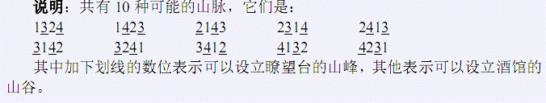

传说很久以前，大地上居住着一种神秘的生物：地精。
地精喜欢住在连绵不绝的山脉中。具体地说，一座长度为 N 的山脉 H可分
为从左到右的 N 段，每段有一个独一无二的高度 Hi，其中Hi是1到N 之间的正
整数。
如果一段山脉比所有与它相邻的山脉都高，则这段山脉是一个山峰。位于边
缘的山脉只有一段相邻的山脉，其他都有两段（即左边和右边）。
类似地，如果一段山脉比所有它相邻的山脉都低，则这段山脉是一个山谷。
地精们有一个共同的爱好——饮酒，酒馆可以设立在山谷之中。地精的酒馆
不论白天黑夜总是人声鼎沸，地精美酒的香味可以飘到方圆数里的地方。
地精还是一种非常警觉的生物，他们在每座山峰上都可以设立瞭望台，并轮
流担当瞭望工作，以确保在第一时间得知外敌的入侵。
地精们希望这N 段山脉每段都可以修建瞭望台或酒馆的其中之一，只有满足
这个条件的整座山脉才可能有地精居住。
现在你希望知道，长度为N 的可能有地精居住的山脉有多少种。两座山脉A
和B不同当且仅当存在一个 i，使得 Ai≠Bi。由于这个数目可能很大，你只对它
除以P的余数感兴趣。

对于 20%的数据，满足 N≤10；
对于 40%的数据，满足 N≤18；
对于 70%的数据，满足 N≤550；
对于 100%的数据，满足 3≤N≤4200，P≤109